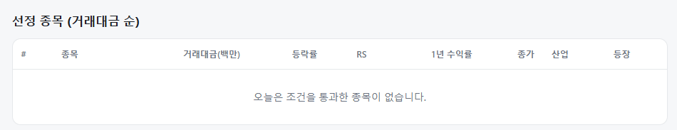
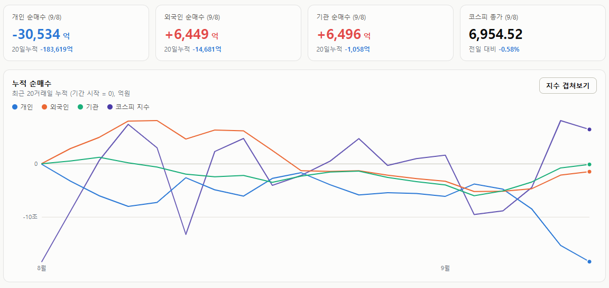
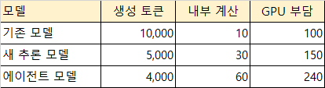

매일의 주도주 정리를 위해 기록합니다.
연속적으로 나온 종목들 또는 상승 후 조정받는 종목 위주로 리서치 해보시면 좋을 것 같습니다.

*오늘의 퀀트픽은 없습니다.
#주도섹터
원자력 발전 및 전기유틸리티
주요 종목: 오르비텍(+29.83% 상한가), 서전기전(+29.80% 상한가), 한전기술(+16.76%), 한전산업(+4.40%), 두산에너빌리티(+1.82%).
분석: 전기유틸리티 업종이 +6.18%, 원자력발전소 해체 테마가 +4.55%, 원자력발전 테마가 +3.06% 상승했습니다. AI 데이터센터 가동을 위한 전력망 확충 기대감으로 오르비텍과 서전기전이 가격제한폭까지 올랐으며, 한전기술(+16.76%) 등 유틸리티 대형주로 매수세가 집중되었습니다.
건설·엔지니어링 및 백화점·유통
주요 종목: 엄지하우스(+14.16%), 대우건설(+8.31%), 롯데쇼핑(+4.81%), 현대백화점(+2.97%).
분석: 건설 업종이 +2.72%, 백화점과일반상점 업종이 +1.40% 상승했습니다. 인프라 투자 기대와 내수 가치주 재평가 흐름이 맞물리며 대우건설(+8.31%)과 대형 백화점주로 순환매 자금이 유입되었습니다.
제약·바이오 개별 테마 및 반도체 앵커
주요 종목: 빛과전자(+30.00% 상한가), 현대약품(+22.68%), JW신약(+7.96%), 명문제약(+5.94%), SK하이닉스(+0.51% 상승 방어), 삼성전자(-0.19% 보합권 방어).
분석: 낙태/피임 테마(+8.14%)의 현대약품(+22.68%) 등 개별 헬스케어 테마가 급등했습니다. 메가 캡에서는 SK하이닉스가 +0.51% 상승 방어하고 삼성전자가 -0.19%로 하방을 지지하며 지수 급락을 완충했습니다.
#조정섹터
2차전지 및 IT 중소형·스마트폰 부품
주요 종목: 원풍물산(-14.72%), KODEX 2차전지산업레버리지(-4.82%), 삼성전기(-5.78% 추정, 84,000원 하락), 현대차(-2.04% 추정, 8,000원 하락), 스카이랩스(-1.80%).
분석: KODEX 2차전지산업레버리지(-4.82%) 등 배터리 레버리지 품목에서 차익 매물이 대거 출회되었으며, IT 부품(삼성전기)과 자동차(현대차)가 조정을 받으며 지수 반락을 이끌었습니다.
#수급동향

코스피 지수는 장중 7,191.83까지 급등했으나 오후 들어 상승분을 반납하며 -0.58% 하락한 6,954.52로 마감했습니다.코스닥 지수는 -1.25% 밀린 811.88로 장을 마치며 지수 전반의 변동성이 확대되었습니다.
유가증권시장에서 외국인 투자자가 6,449억 원(20일 누적 -1조 4,681억 원), 기관 투자자가 6,496억 원(20일 누적 -1,058억 원)을 동반 순매수했습니다. 반면 개인 투자자는 3조 534억 원(20일 누적 -18조 3,619억 원)을 순매도하며 지수 고점 도달 구간에서 대규모 차익 실현 매물을 쏟아냈습니다. 개인 순매도와 외인·기관 매수세 간의 약 1.76조 원 수급 공백은 자사주 매입 집행(기타법인) 등이 흡수한 것으로 분석됩니다.
토큰은 줄어도 계산은 늘어난다 — Astra가 바꾸는 AI 수요 측정법
앞서 12주 데이터로 "토큰 단가는 절반으로 떨어졌지만 사용량이 2.5배 늘어 지출은 증가했다"는 글을 썼습니다. 그런데 OpenAI의 새 모델 GPT-6 Astra는 그 측정법 자체에 질문을 던집니다. KB증권 김일혁 연구위원의 리포트를 한 문장으로 압축하면 이렇습니다.
① Astra는 무엇이 다른가
지금까지 AI는 질문 → 학습된 지식 조합 → 답변 방식으로 일했습니다. 코딩처럼 학습 재료가 풍부한 분야에서 특히 강했죠. Astra는 다릅니다. 낯선 환경에 들어가 → 규칙을 파악하고 → 행동하고 → 결과를 보고 → 고쳐서 다시 행동합니다. OpenAI에 따르면 Astra는 ARC-AGI-3에서 99.9%를 기록했고, 자동화 작업 벤치마크에서 이전 모델(18.1%)의 두 배가 넘는 41.4%를 냈습니다.
비유하자면 문제집을 많이 풀어본 수험생에서 처음 보는 게임의 규칙을 스스로 파악하는 사람으로 바뀌는 겁니다.
② 미·중 경쟁에서 중요한 이유
중국 모델이 미국을 빠르게 따라온 비결 중 하나는 '증류'입니다. 큰 모델의 질문→답변 데이터로 작은 모델을 학습시키는 방식이죠. 그런데 관찰→가설→행동→실패→수정을 반복하는 능력은 이런 데이터만으로 복제하기 어렵습니다.
물론 중국도 같은 방향으로 갑니다. 알리바바 Qwen의 AgentWorld는 웹·운영체제 등 7개 환경을 모델링하는 세계 모델입니다. 중국이 이 영역에서도 빠르게 따라온다면 "GPU가 부족해 구조적으로 밀린다"는 논리가 약해질 수 있어 지켜봐야 할 변수입니다.
③ 핵심 — 보이는 토큰과 실제 계산량이 따로 논다
기존 추론 모델은 "생각 1을 적고 → 생각 2를 적고 → 답한다"는 식으로 생각이 토큰으로 드러났습니다. 최근 논의되는 '반복 깊이' 방식은 "머릿속에서 생각 → 다시 생각 → 답한다"에 가깝습니다. 계산은 여러 번 돌리되 토큰으로 출력되지 않는 겁니다. 그 결과 출력 토큰은 적은데 GPU 계산량은 늘어나는 현상이 생길 수 있습니다.

토큰은 60%(생성 토큰 10,000→4,000) 줄었는데 계산은 140%(GPU 부담 100→240) 늘 수 있다는 예시입니다. 다만 Astra가 실제 이 구조를 썼다는 건 공식 확인된 사실이 아닙니다(현재로선 업계 추정입니다.)
④ 같은 현상, 다른 의미 — OpenAI엔 비용, 엔비디아엔 수요
계산량 증가는 입장에 따라 정반대 의미를 갖습니다.
OpenAI에는 비용입니다. 100만 토큰에 50달러를 받는데 GPU 비용이 10달러에서 25달러로 오르면 마진이 40달러에서 25달러로 줄어듭니다. 앞으로 AI 업체엔 '토큰당 매출'보다 '토큰당 계산 비용'이 중요해집니다.
엔비디아에는 수요입니다. 화면엔 답변이 500자밖에 안 나와도, 그 500자를 만들기 위해 GPU가 수십 배 더 계산하고 있을 수 있습니다. 사용자 → OpenAI → 엔비디아 → 메모리 회사로 이어지는 구조입니다.
⑤ 메모리는 한 단계 더 생각해야
다만 계산량과 메모리를 같은 것으로 보면 안 됩니다. 반복 계산은 같은 가중치를 재사용하므로 계산량 증가율이 HBM 증가율보다 클 수 있습니다. 가장 직접적인 수혜는 GPU이고 HBM은 그다음입니다.
하지만 에이전트 시대엔 긴 문맥, KV 캐시, 동시에 도는 에이전트 수, 작업 시간, 영구 기억이 함께 커집니다. HBM(즉시 계산) → D램(에이전트 상태) → eSSD(장기 문맥)로 이어지는 메모리 계층 전체가 확대되는 방향입니다. 실제로 Astra 출시 후 메모리 수요 기대가 다시 부각됐습니다.
가장 중요한 변화는 AI 수요를 재는 자가 바뀌고 있다는 것입니다. 과거엔 토큰 양을 봤다면, 앞으로는 에이전트 수 × 에이전트당 작업 수 × 작업당 계산량을 봐야 합니다. 직원 한 명이 하루 20번 챗GPT를 쓰던 시대에서, 에이전트 10개가 각자 하루 1,000개 작업을 처리하는 시대가 되면, 사람이 보는 토큰과 무관하게 뒤에서 도는 계산은 급증합니다.
Astra 모델의 등장으로
'토큰 계산량 증가가 OpenAI에겐 청구서, 엔비디아에겐 주문서'가 되었습니다.
오늘 하루도 수고하셨습니다!